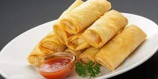

Lumpia semarang adalah makanan semacam rollade yang berisi rebung, telur, dan daging ayam atau udang.
 Tahu gimbal Makanan ini terdiri dari tahu goreng, rajangan kol mentah, lontong, taoge, telur, dan gimbal (udang yang digoreng dengan tepung) dan dicampur dengan bumbu kacang yang khas karena menggunakan petis udang. Saus bumbu kacang untuk tahu gimbal agak sedikit encer.
Tahu gimbal Makanan ini terdiri dari tahu goreng, rajangan kol mentah, lontong, taoge, telur, dan gimbal (udang yang digoreng dengan tepung) dan dicampur dengan bumbu kacang yang khas karena menggunakan petis udang. Saus bumbu kacang untuk tahu gimbal agak sedikit encer.
 Babat Gongso merupakan makanan berbahan dasar babat dan daging sapi khas Semarang. Makanan ini memiliki rasa gurih dan pedas karena rempah, serta bumbunya meresap ke dalam daging.
Babat Gongso merupakan makanan berbahan dasar babat dan daging sapi khas Semarang. Makanan ini memiliki rasa gurih dan pedas karena rempah, serta bumbunya meresap ke dalam daging.
Es cao merupakan minuman khas Semarang yang berisikan es, cincau hitam, pisang, es batu, dan sirup. Es cao cocok dinikmati di siang hari, karena memiliki rasa gurih, manis, dan lezat.
Kue lapis legit adalah kue khas Semarang yang memiliki dua warna garis. Lapis legit memiliki warna coklat terang dan tua. Adapun varian rasanya beragam, seperti coklat, keju, kismis, dan kacang almon.